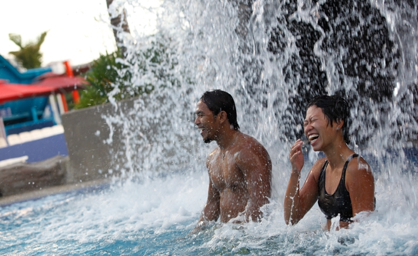
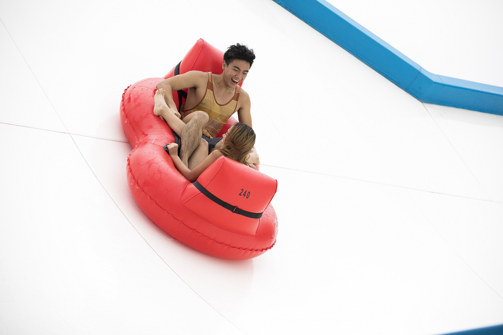
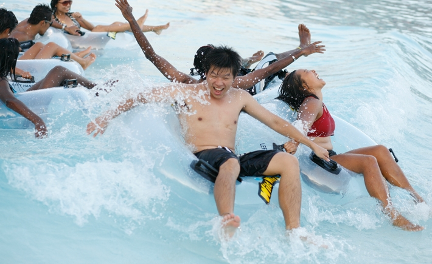
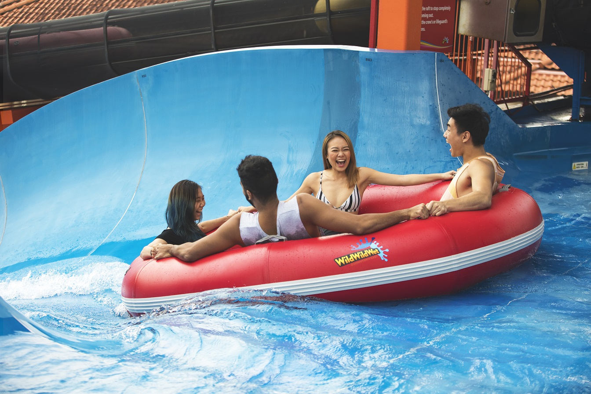

This ride is definitely not for the faint-hearted!
Classfied as extreme in splash, speed and thrill categories, go ahead and challenge yourself in this adrenaline-rushing experience!
With speeds reaching up to 50 feet per second, take the plunge down a near-vertical drop on one of Asia's longest free fall water slides.
For more information on the minimum height, seating arrangement and remarks, click here.

Wild Wild Wet
Liquid Theraphy At Work!
Enjoy a bubbly massage that soothes your aches and fluid jets to rub and ease the kinks in your muscles right here at our Jacuzzi!
Here lies the answer to unwind and recharge your tired bodies, catching your breath before going on more rides!
So, choose a nice spot, sit back, relax and let the water do its work. Literally.
For more information on the water depth and remarks, click here.

Wild Wild Wet
This is for all the young ones out there!
Come taste a wilder world at the all-new kids' water paradise, filled with exhilarating pint-sized versions of the big rides and designed to provide maximum entertainment to the little ones.
For more information on the water depth, seating arrangement and remarks, click here.

Wild Wild Wet
Wild Wild Wet
Fear the kraken!
Experience the adrenaline as you zip down the slide lanes on Singapore's first four-lane mat racer slide!
Bring your friends and family here to bring the competitive thrill to a whole new level!
For more information on the minimum height and seating arrangement, click here.

Wild Wild Wet
Splashy Slides and Swings for the tots!
With a theme of an experimental laboratory, Professor's Playground is full of classic fixtures such as slides, ladders, water cannons and fountains!
For more information on the water depth and remarks, click here.

Wild Wild Wet
Flush yourself down! Literally!
Welcome to Asia's first hybrid ride featuring both the Behemoth BOWL40 and TornadoWAVE rides in one!
Gather a group of four, sit on a raft, and slide down the tunnel and up a near-vertical wall at crazy speeds. Holler your lungs out as you drop into the ginormous bowl and get ready for the flush!
For more information on the minimum height, seating arrangement and remarks, click here.

Wild Wild Wet

Wild Wild Wet
Now are you ready for a really shiok time?
Spanning 335 metres in length, Shiok River skirts the perimeter of the park, meandering through a variety of lush landscape that will leave you soothed and invigorated. Take a breather, go with the flow and let the trip wash away your cares. It's a great way to escape from all the commotion and noise of everyday life.
*Do take note tubes are optional for those who prefer to travel at their own pace. You can snooze your way through a dream-filled journey that will last as long as you want. Or take a quick dip to recharge your batteries before plunging into some of our more exciting rides again!
For more information on the water depth and remarks, click here.
Wild Wild Wet
Calling all adrenaline junkies!
Imagine plunging down a four-storey ramp, accelerating until you hit the deck and skimming across to soar on the opposite side. Now repeat that several times until your momentum runs out!
Ever wished you could skateboard like a pro? Here's your chance to do so on a platform slicked with water for that extra kick! Powered by gravity and kinetic energy, the Slide Up is a cool way to indulge your need for speed.
For more information on the minimum height, seating arrangement and remarks, click here.

Wild Wild Wet
Wild Wild Wet
Families with young ones can enjoy the all-new Splash Play where little ones can slosh around the low water with fun jets and water sprays!
For more information, click here.

Wild Wild Wet
Get Ready for Wacky curves & Crazy turns!
This twisty ride comes in two parts: open and covered body slides, each with its own unique route and distinctive angles.
The Waterworks is perfect for friendly races to see who can hit the landing pool first!
For more information on the minimum height, seating arrangement and remarks, click here.

Wild Wild Wet
Wild Wild Wet
Classfied as extreme in splash, speed and thrill categories, this is the first of its kind in Singapore.
The all-new Torpedo ejects you from an 18-metre high capsule right into a heart-stopping free fall, which propels you straight into a manic trajectory of hair raising twists and turns at mind-numbing speeds of up to 70km/hr.
What are you waiting for? Get set for jaw-dropping, hair raising and adrenalin-pumping adventures on Torpedo right here at Wild Wild Wet!
For more information on the water depth, minimum height, seating arrangement and remarks, click here.
Wild Wild Wet
Tsunami? In Singapore??
That's right! Our exclusive Tsunami combines the best of swimming pools and the sea to give you the excitement of the surf under controlled conditions. Without the hassle of choppy swells or dangerous currents, even kids can feel totally at ease in the water.
Take your time to enjoy these waves as you lie back and soak up the sun and fun!
For more information on the water depth and remarks, click here.
Wild Wild Wet

Wild Wild Wet
White-water rafting was never this fun!
The first raft slide in Southeast Asia, Ular-Lah is a super flume ride that offers you a chance to brave the rapids with five other companions. Ideal for thrill and adrenaline seekers, it's the closest thing you'll ever experience next to white water rafting!
For more information on the water depth, seating arrangement, minimum height and remarks, click here.

Wild Wild Wet
Wild Wild Wet
Get sucked into a world of extreme turns and curves at absolute break-neck speeds in Singapore's first high-speed 360 degrees extreme loops ride!
For more information on the minimum height, seating arrangement and remarks, click here.

Wild Wild Wet
Wild Wild Wet
Yippee! is a shallow sloshing area filled with soft play equipment designed to provide a safe and fun environment for toddlers.
Other than generating hours of amusement for your kid, it's also a primer course to the intermediate Professor's Playground next door!
For more information on the water depth and remarks, click here.
Wild Wild Wet